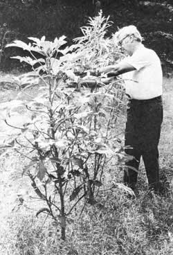

Roscoe Walker-a busy Atlanta, Georgia engineer-really knows his beans (and squash and corn and tomatoes) when it comes to growing a garden. For the past two years, in fact, Roscoe's vegetable patch has produced so prolifically that he's been forced to call in numerous friends and neighbors to help him harvest and freeze its bounty. .
Of course, there's nothing really unusual about Mr. Walker's harvests. Most gardeners-even beginners-find themselves up to their elbows in tomatoes or squash or something by the end of each summer. What is unusual about Roscoe's success, however, is the fact that he does so well without cultivating the soil in his vegetable patch al all, and without doing any hard work! And what is Mr. Walker's secret? Actually, he has five of 'em:
[1] Roscoe says his gardening system will only work on plots of land that are well blessed with sunlight. So make sure your vegetable patch receives at least 25% of the available solar fall in your area. In short, stay away from deeply shaded gardening spots if you intend to give Walker's methods a try.
[2] Cover-really cover-your vegetable patch with natural fertilizer during the winter (sometime from October through January, and the earlier the better). The material from a well-decayed compost pile is fine for this purpose and such humus plus either chicken (Walker's first choice) or cow manure is even better. Roscoe likes to put down a half pound per square foot of garden (that's 500 pounds on a plot measuring 20 X 50) and he recommends half again as much-three-quarters of a pound of the fertilizer per square foot-for a garden going into new ground.
[3] Once the humus and manure are down, cover the whole vegetable patch with newspapers. Lay 'em on 10 to 12 sheets thick and overlap 'em four inches at all joints and seams to exclude sunlight.
[4] Cover the newspapers with six inches of leaves.
[5] Cover the leaves with another six inches of pine straw or rain-damaged hay. Then go away. Don't fret. Don't worry about what you've done. Don't peek under the hay or leaves or newspapers every week. Just go away.
And wonder upon wonders, when planting time rolls around in the spring . . . you should find your garden's soil ready to receive sets and seeds with nary a need, on your part, for the use of a plow or hoe. Why? Because earthworms-snug and well-fed under that protective blanket you put down months before-have been turning and digesting and enriching the covered dirt. They've been mixing bits of the humus and manure and newspapers into the soil too. In short, while you've been thinking of other things . . . these little "shoemaker's elves" have been hard at work for you.
So hard at work, in fact, that your spring planting should be the easiest you've ever experienced. "I just stretch a string where I want a row to go," says Roscoe. "Then, if I'm setting out started plants, I use a trowel to open a hole (large enough for each set's roots) right through what remains of the newspapers. When I'm putting in beans, peas, and other large seeds, I pierce the paper with a sharp stick every four inches and drop two seeds into each hole. And for very small seeds, such as turnip greens, I cut rows into the paper mulch with a shovel or knife and sow right through the cut."
And then Mr. Walker just sits back and lets Nature work her wonders. Thanks to the thick carpet of mulch on his garden, weeds seldom get the chance to make a good start among his vegetables. And, also thanks to the mulch (which holds moisture and keeps dry winds and the sun from getting at the garden's soil), droughts have little or no effect on his vegetable patch.
(EDITOR'S NOTE: A heavily mulched garden does indeed both hold more moisture longer and slay far cooler than an unmulched one. And this is the reason Mr. Walker emphasizes that his methods be used only can a sunny vegetable patch. Otherwise, the soil in the plot would be slow in warm ing up in the ,spring . . . and might stay just a little too cool and damp for best plant propagation throughout much of the summer.)
Roscoe Walker has two further tips for gardeners: [1] Never throw away organic garbage of any kind. It's worth something to your vegetable patch any time of the year. Just spade or dump it into the garden-whatever the season-and cover it with newspapers and straw to keep down odors and hasten the offering's decomposition, [2] Instead of reaching for a poison spray after harmful insects start chomping on your prized vegetables, buy a pint of ladybugs and two clusters of praying mantis eggs before the trouble starts. If you distribute these little predators among your garden's rows according to directions, you should have a minimum amount of trouble with the "bad guys" as the season wears on.
|
Below, Rescue Walker of Atlanta, Georgia harvests okra from giant plants in his ""no hard work"" garden. The secret to his success? Heavy applications of compost, newspapers, leaves, pine straw. and ladybugs . . . plus big helpings of sunshine. |
 |
|